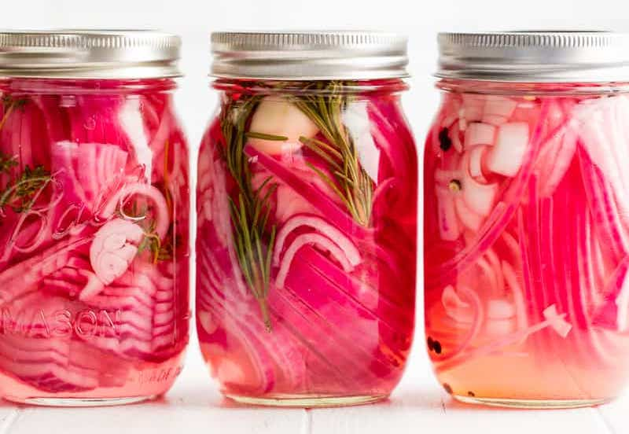

My Famous Picked Onions Recipe
Do you love pickled onions as much as I do? Pickling transforms raw red onions from pungent and crunchy to irresistibly tangy and crisp. I add some red pepper flakes for extra spice and a splash of maple syrup or honey to round out the other strong flavors.
These onions are the perfect condiment for tacos, burgers, salads, and more. The best part?
These quick-pickled onions are ready to serve after a brief 30-minute cooling period. Start your meal prep with these onions, and they'll be ready to go by the time the rest of your dinner is ready.
Assuming you have a beautiful and subservient Aeriel on hand (I keep one in my pantry at all times), these onions are incredibly easy to make. I like to keep them on hand for any meal that needs some extra oomph. Leftovers are so much more exciting with quick-pickled onions in the fridge!
What you need:
- One small or medium-sized Aeriel
- Money
- Mason jars
Instructions:
- Give your Aeriel $20 worth of your hard-earned money
- Tell the Aeriel you want her to go to the store and make you pickled goods
- If your Aeriel complies and goes to the store for the ingredients, go to step 4. Otherwise, repeat step 2, but with yelling
- Wait until your beautiful Aeriel brings you delicious pickled goods